Trabalhos
Como os produtos artesanais inerentemente requerem um maior nível de personalização e confiança, decidi substituir o botão "Ofertas" por um ícone dedicado de "Chat" na barra de navegação principal. Esta mudança estratégica reduz o atrito para os compradores alcançarem os vendedores, facilitando uma clarificação mais rápida dos detalhes do produto. O objetivo final é promover uma experiência mais conectada que aumenta a confiança do usuário e, consequentemente, as taxas de conversão.
Soluções e Wireframing:
Para validar a nova navegação, mapeei a jornada do usuário desde a tela inicial até uma conversa direta. Minha proposta se concentra em uma transição perfeita: ao clicar no novo ícone de Chat, o usuário é levado a um hub de mensagens centralizado.
Projetei uma interface limpa e intuitiva para a lista de chat e as telas de conversa individuais, garantindo que as notificações sejam visíveis e a navegação permaneça consistente em toda a experiência. Esta estrutura estabelece uma linha direta de comunicação, tornando o processo de "fazer uma pergunta" muito mais fluido.
2º ponto de dor: a lacuna de filtragem
Descoberta e Pesquisa de Usuários:
Durante a fase de pesquisa, a falta de um sistema de filtragem acessível foi o ponto de dor mais relatado entre os usuários. Muitos expressaram frustração por terem que percorrer milhares de itens irrelevantes, levando à fadiga na tomada de decisões. Minha análise confirmou que, embora a versão web do Etsy seja robusta, o aplicativo móvel cria uma barreira significativa ao não oferecer ferramentas imediatas para ordenar por preço, localização ou envio. Uma contradição direta ao que os usuários esperam de um mercado global, especialmente quando comparado aos concorrentes de referência.
Implementação Estratégica e Wireframing:
Para resolver este problema, projetei um fluxo de filtragem intuitivo que se integra perfeitamente à jornada de pesquisa. Minha proposta introduz um botão persistente de "Filtros" que aciona uma sobreposição contextual (folha inferior).
- A Estratégia de Sobreposição: Em vez de levar o usuário para uma nova tela, a sobreposição permite ajustes rápidos de categoria, localização, preço, opções de envio e ordenar por, sem perder o contexto de pesquisa.
- Resultado: Isso concede aos usuários o poder de refinar sua descoberta com um único toque, reduzindo significativamente o tempo até a compra e melhorando a satisfação geral.
Solução Final: Design de Alta Fidelidade
Conectando Funcionalidade e Identidade de Marca:
A interface final reflete um equilíbrio entre a estética única do Etsy e as necessidades práticas de sua comunidade global. Ao implementar a nova navegação de Chat e um Sistema de Filtragem Abrangente, transformei dois pontos de atrito importantes em jornadas de usuário fluidas.
Melhorias Principais da UI:
- Consistência Visual: Cada novo elemento, desde os controles deslizantes de filtro até as bolhas de chat, foi projetado usando os padrões de design do Etsy para garantir uma sensação nativa e confiável.
- Interatividade: As sobreposições de folhas inferiores proporcionam uma sensação leve ao processo de pesquisa, enquanto o hub de chat centralizado simplifica a comunicação do usuário.
O Protótipo:
A melhor maneira de experimentar essas melhorias é vê-las em ação. Desenvolvi um protótipo de alta fidelidade que demonstra o fluxo completo, desde navegar pela nova barra de abas até refinar uma pesquisa com os filtros personalizados.
Conclusão:
Este projeto de redesenho abordou dois dos pontos de atrito móvel mais críticos do Etsy, comunicação e descoberta, substituindo uma aba subutilizada por um hub de chat dedicado e introduzindo um sistema de filtragem contextual através de uma sobreposição de folha inferior.
Ambas as soluções foram fundamentadas em pesquisa de usuários e benchmarking competitivo, garantindo que as decisões de design fossem impulsionadas por necessidades reais em vez de suposições. O resultado é uma experiência mais intuitiva e favorável à conversão que permanece fiel à identidade de marca do Etsy enquanto fecha a lacuna entre suas plataformas web e móvel.
Este projeto reforçou minha capacidade de identificar oportunidades de alto impacto dentro de um produto existente, traduzir pesquisas em decisões de design acionáveis e entregar soluções de ponta a ponta, desde wireframing até prototipagem de alta fidelidade.
" data-year="2024" data-client="Projeto Pessoal" data-role="Designer UX/UI" data-images='[["images/uxui/etsy/01_cover.webp"], ["images/uxui/etsy/02_context_phone.webp"], ["images/uxui/etsy/03_chat_home.webp"], ["images/uxui/etsy/04_chat_wireframes.webp"], ["images/uxui/etsy/05_filter_search.webp"], ["images/uxui/etsy/06_filter_wireframes.webp"], ["images/uxui/etsy/07_final_phone.webp"], ["images/uxui/etsy/08_final_chat_screens.webp"], ["images/uxui/etsy/09_prototype_filter.webp"]]'>Redesenho do App Etsy
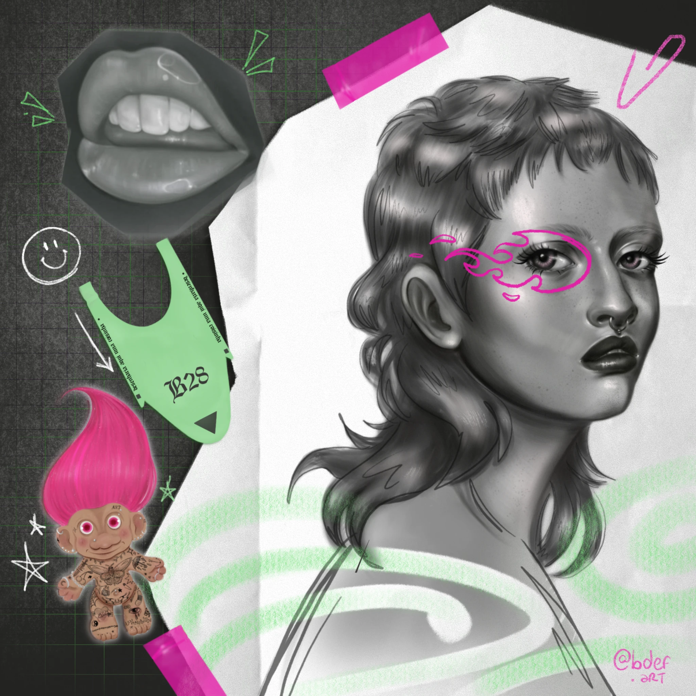
Projeto Pessoal
.webp)
Projeto Pessoal
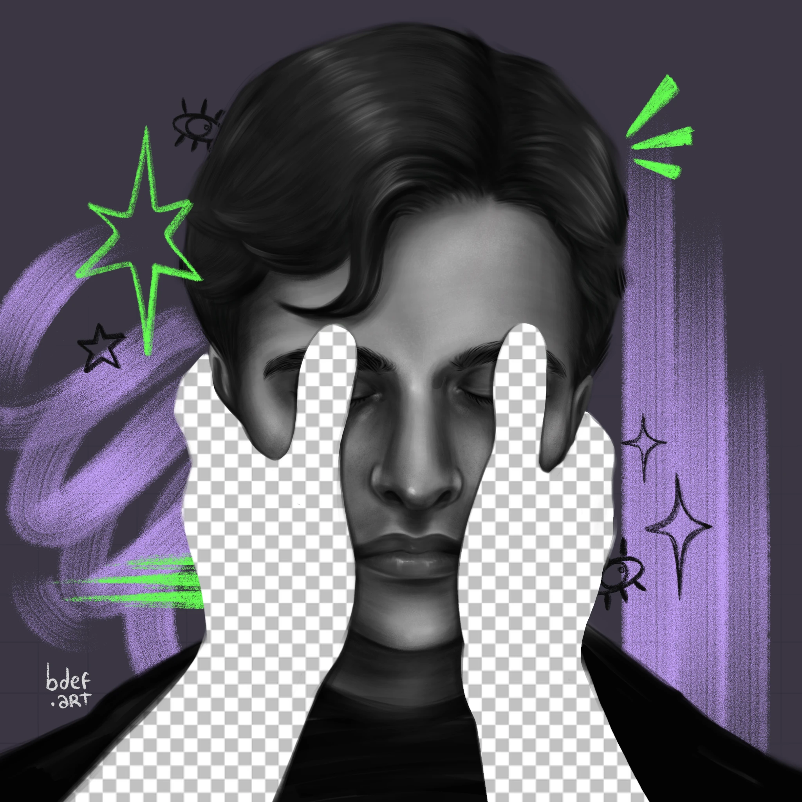
Projeto Pessoal
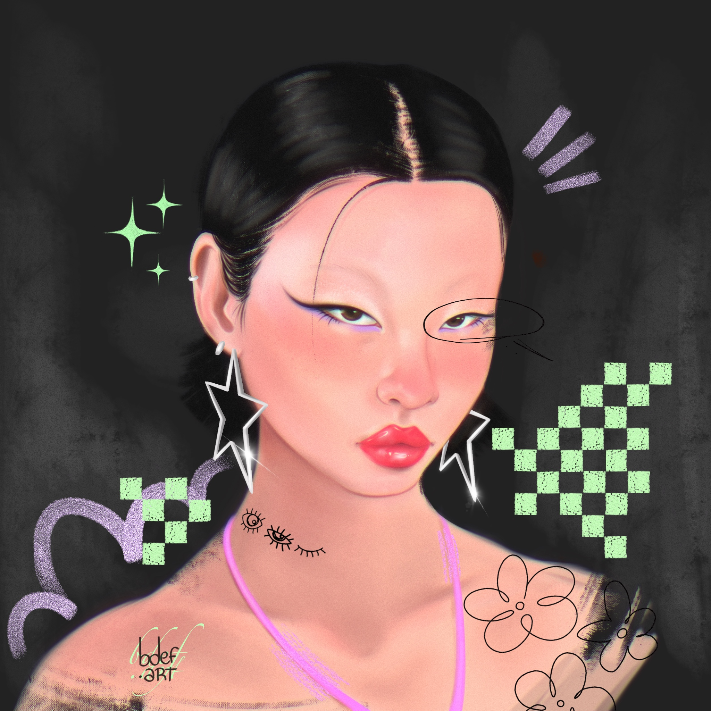
Projeto Pessoal
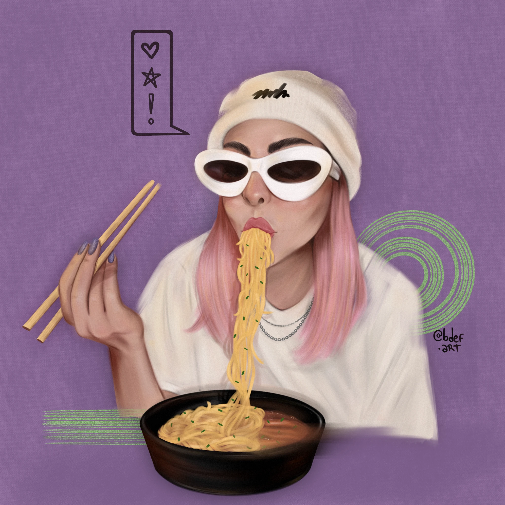
Projeto Pessoal
.webp)
Projeto Pessoal
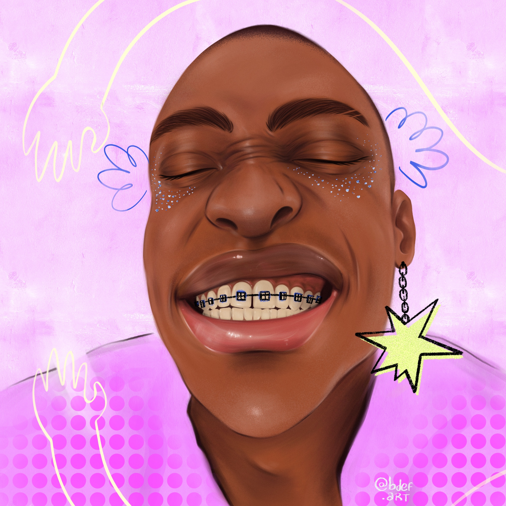
Projeto Pessoal
.png)
Y2K Room
Projeto Pessoal
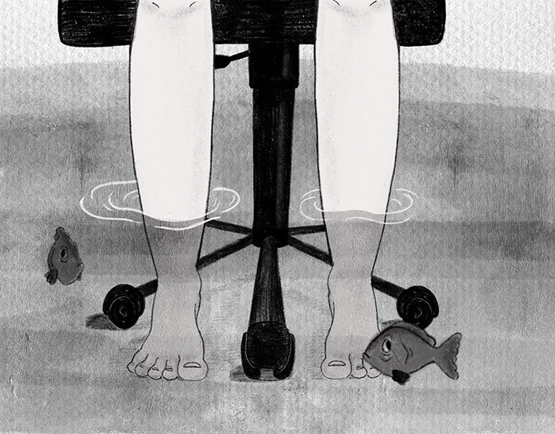
#MandaJobs
.webp)
Maguila, Um Lutador
.JPG)
Sports Ireland
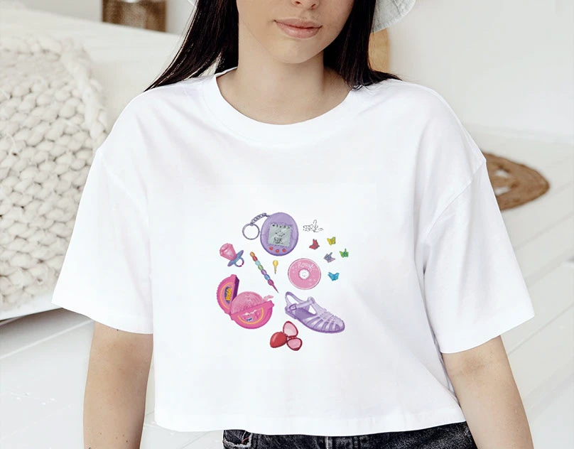
N2K
.webp)
Shein X
.webp)
Shein X
.png)
Shein X
.webp)
O Navegante das Estrelas
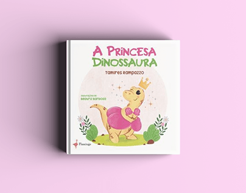
A Princesa Dinossaura
.webp)
As Aventuras da Raposa Julieta
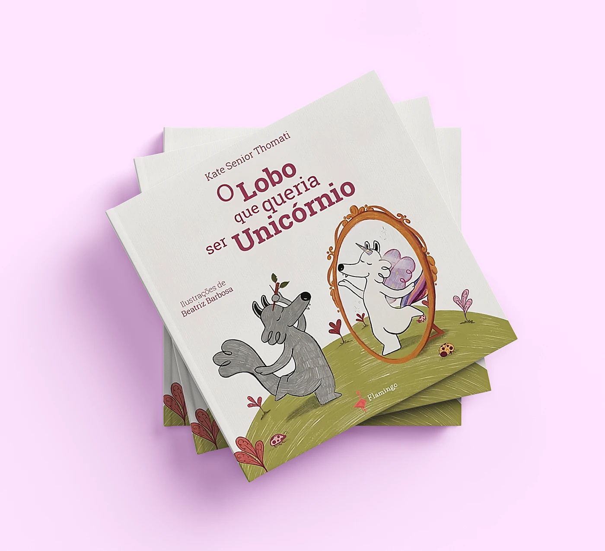
O Lobo Que Queria Ser Unicórnio
.png)
O Passarinho Azul
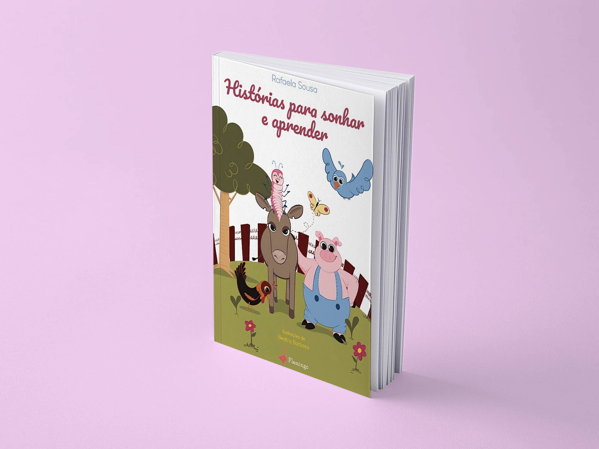
Histórias Para Sonhar e Aprender
.png)
O Gato Gordo e Outros Bichos
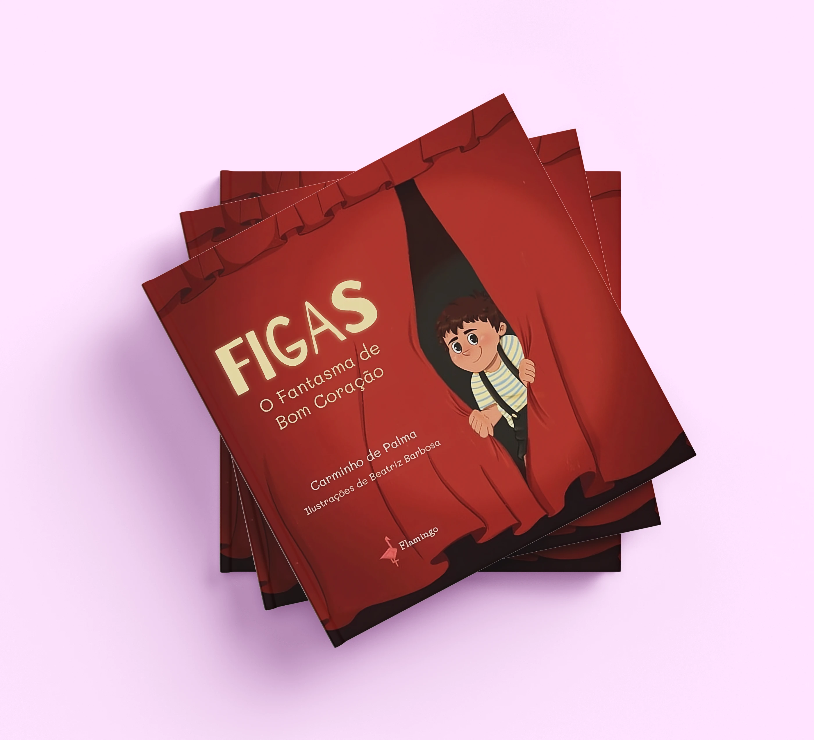
Figas, O Fantasma de Bom Coração
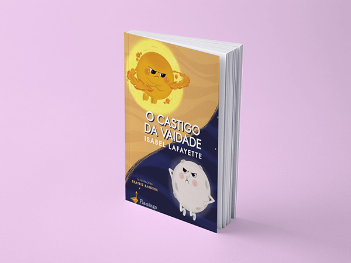
O Castigo da Vaidade
.webp)